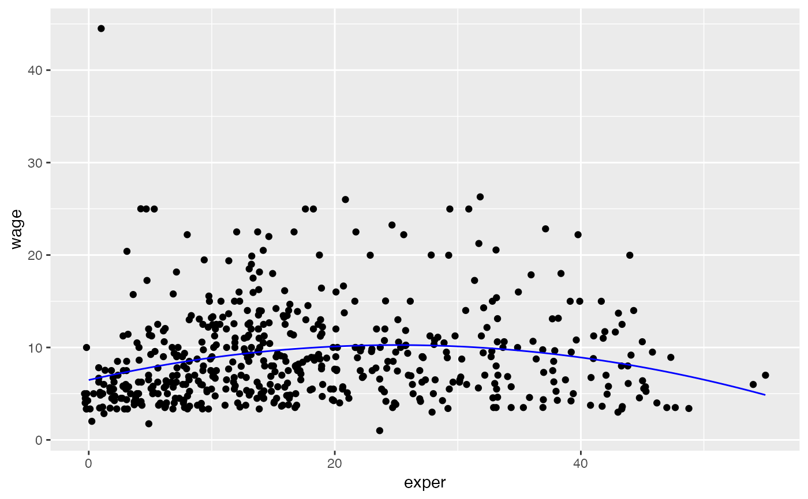

Provides an easy mechanism for creating simple "mathematical" functions via a formula interface.
makeFun(object, ...) # S3 method for `function` makeFun( object, ..., strict.declaration = TRUE, use.environment = TRUE, suppress.warnings = FALSE ) # S3 method for formula makeFun( object, ..., strict.declaration = TRUE, use.environment = TRUE, suppress.warnings = TRUE ) # S3 method for lm makeFun(object, ..., transformation = NULL) # S3 method for glm makeFun(object, ..., type = c("response", "link"), transformation = NULL) # S3 method for nls makeFun(object, ..., transformation = NULL)
Arguments
| object | an object from which to create a function. This should generally be specified without naming. |
|---|---|
| ... | additional arguments in the form |
| strict.declaration | if |
| use.environment | if |
| suppress.warnings | A logical indicating whether warnings should be suppressed. |
| transformation | a function used to transform the response.
This can be useful to invert a transformation used on the response
when creating the model. If |
| type | one of |
Value
a function
Details
The definition of the function is given by the left side of a formula. The right side lists at least one of the inputs to the function. The inputs to the function are all variables appearing on either the left or right sides of the formula. Those appearing in the right side will occur in the order specified. Those not appearing in the right side will appear in an unspecified order.
When creating a function from a model created with lm, glm, or nls,
the function produced is a wrapper around the corresponding version of predict.
This means that having variables in the model with names that match arguments of
predict will lead to potentially ambiguous situations and should be avoided.
Examples
#> function (x, y, a, b) #> sin(x^2 * b) #> <environment: 0x7fa0ee2ff7b0>#> function (x, y, a = 2, b) #> sin(x^2 * b) #> <environment: 0x7fa0ee2ff7b0>#> function (b, a = 2, y = 3, x) #> a * sin(x^2 * b) #> <environment: 0x7fa0ee2ff7b0>if (require(mosaicData)) { model <- lm( log(length) ~ log(width), data = KidsFeet) f <- makeFun(model, transformation = exp) f(8.4) head(KidsFeet, 1) }#> name birthmonth birthyear length width sex biggerfoot domhand #> 1 David 5 88 24.4 8.4 B L Rif (require(mosaicData)) { model <- lm(wage ~ poly(exper, degree = 2), data = CPS85) fit <- makeFun(model) if (require(ggformula)) { gf_point(wage ~ exper, data = CPS85) %>% gf_fun(fit(exper) ~ exper, color = "red") } }if (require(mosaicData)) { model <- glm(wage ~ poly(exper, degree = 2), data = CPS85, family = gaussian) fit <- makeFun(model) if (require(ggformula)) { gf_jitter(wage ~ exper, data = CPS85) %>% gf_fun(fit(exper) ~ exper, color = "red") gf_jitter(wage ~ exper, data = CPS85) %>% gf_function(fun = fit, color = "blue") } }if (require(mosaicData)) { model <- nls( wage ~ A + B * exper + C * exper^2, data = CPS85, start = list(A = 1, B = 1, C = 1) ) fit <- makeFun(model) if (require(ggformula)) { gf_point(wage ~ exper, data = CPS85) %>% gf_fun(fit(exper) ~ exper, color = "red") } }